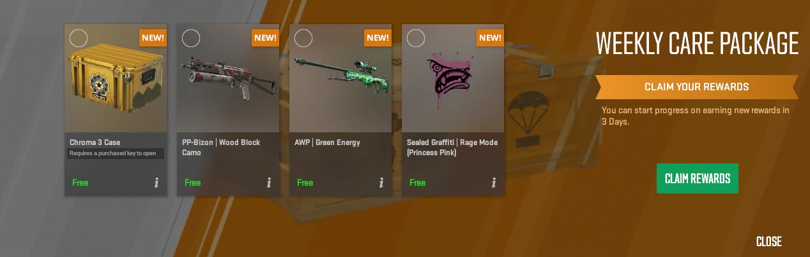

Weekly Drop Reset
How CS2 Weekly Drops Work
Overview
Every CS2 Prime player can receive one free Weekly Care Package per week. To unlock it, you only need to play official matchmaking and earn enough XP to rank up once during the weekly cycle.
Requirements
- Prime Status is mandatory
- Play on official CS2 servers (Competitive, Casual, Deathmatch, Wingman, etc.)
- Gain enough XP to reach the weekly rank-up
- Only one drop per week — extra matches don’t give extra rewards
What You Get
Your Weekly Care Package shows 4 items, and you can pick any 2. The drop can include:
- Weapon cases
- Weapon skins
- Graffiti / Sticker capsules
The active reward pool changes over time as Valve rotates collections and cases.
Best Choices
- Pick the case (usually holds the highest long-term value)
- Choose skins only if they belong to a valuable collection or have a good float
- Avoid graffiti unless you really want it
- Try to get your drop early in the week for better trading opportunities

All CS2 & CSGO Cases